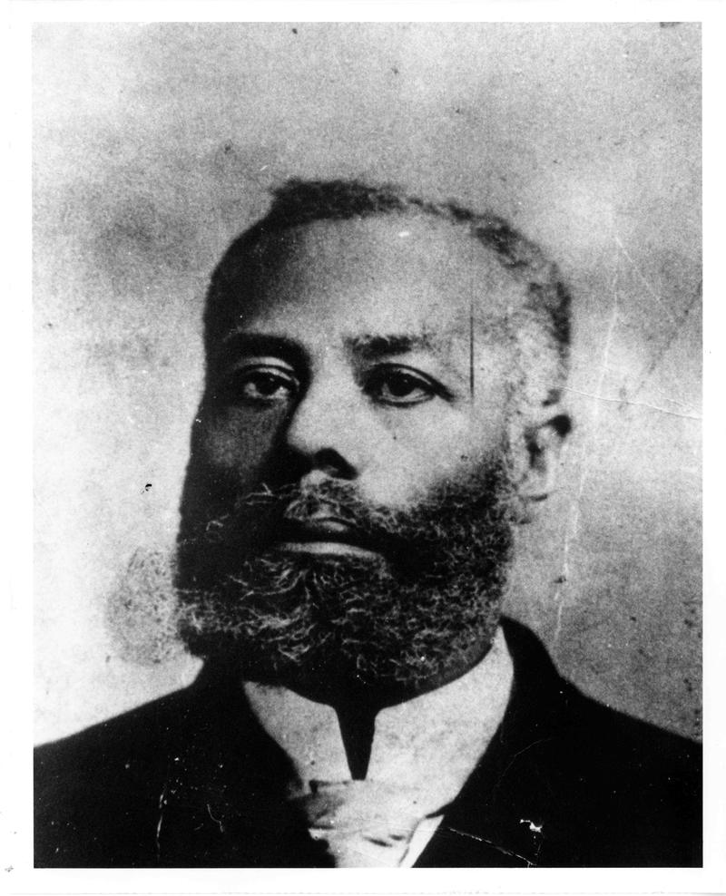

Elijah J. McCoy
Canadian-born African-American inventor and engineer

An image of Canadian-American inventor Elijah McCoy
- 1844 -in Colchester, Ontario,
- 1859 - At age 15, Elijah McCoy was sent to Edinburgh, Scotland for an apprenticeship and study
- 1860 - Based on 1860 Tax Assessment Rolls, land deeds of sale, and the 1870 USA Census it can be determined the George McCoy family moved to Ypsilanti, Washtenaw, Michigan in 1859-60.
- 1872 - He invented an automatic lubricator for oiling the Steam engines of locomotives and ships, patenting it in 1872 as "Improvement in Lubricators for Steam-Engines"
- 1909 - Booker T. Washington in Story of the Negro (1909) recognized him as having produced more patents than any other black inventor up to that time. This creativity gave McCoy an honored status in the black community that has persisted to this day.
- 1920 - Lubricators with the McCoy name were not manufactured until 1920, near the end of his career. He formed the Elijah McCoy Manufacturing Company to produce his works.